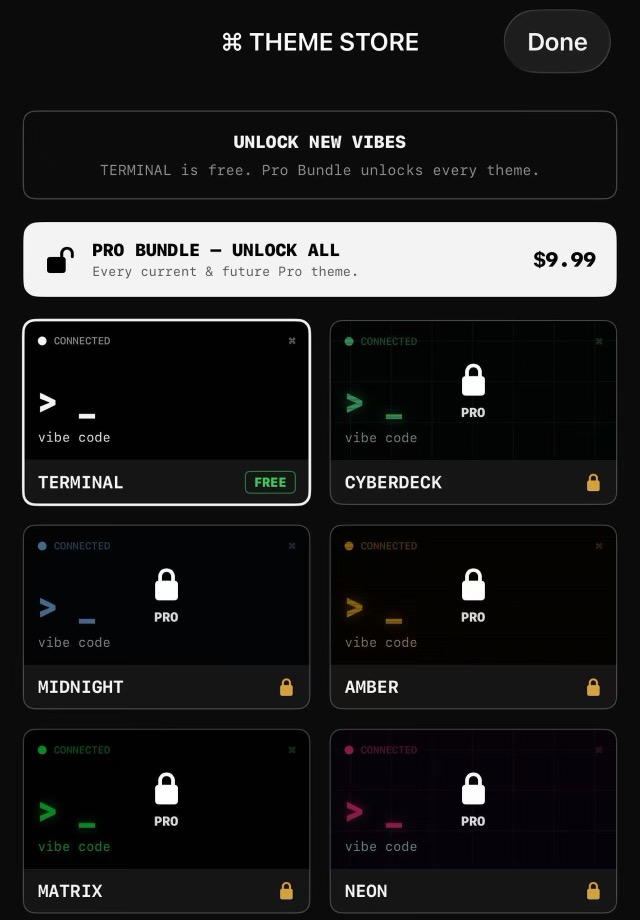

Does this go through a relay server?
On LAN/Tailscale/VPN, connections go directly from your iPhone to your machine. You can also enable a Cloudflare Quick Tunnel yourself for public wss:// access. We do not operate a relay.
Code on your Mac.
From the couch. From the train. From anywhere.
A focused iPhone terminal that pairs with a tiny Mac server. Drive claude, codex, or a shell session — full color, full history, no SSH gymnastics.

Run the Mac menu-bar app, then scan its pairing QR from iOS.
Requires macOS 12+. Windows is not supported in this launch. If Gatekeeper blocks first launch, right-click the app and choose Open.
Available on the App Store soon. The TERMINAL theme and demo mode are free, so you can try the app before buying the optional Pro Themes Bundle.
If you're a beta tester with a TestFlight invite, check the email we sent.
Email thezhuangpark@outlook.com for setup help, purchase issues, or bug reports.
On LAN/Tailscale/VPN, connections go directly from your iPhone to your machine. You can also enable a Cloudflare Quick Tunnel yourself for public wss:// access. We do not operate a relay.
You can. SSH on a phone with a soft keyboard is rough — we wanted something that feels like an editor, not a terminal emulator pretending to be one. Sessions persist. Resize is sane. Demo mode lets you try before connecting.
Apple handles all IAP refunds. Tap Report a Problem in the App Store on the receipt within 90 days.
English is the primary launch language. Short product summaries are available below.
Vibe Code Remote 是一款 iPhone 终端 app，用来连接你自己的 Mac server。扫码配对后，你可以在手机上继续控制 shell、Claude Code、Codex 和长时间运行的开发任务。
Vibe Code Remote は、自分の Mac 上で動く小さなサーバーに接続する iPhone 向けターミナルです。QR コードでペアリングし、shell、Claude Code、Codex、長時間実行する開発タスクを操作できます。
Vibe Code Remote는 사용자의 Mac 서버와 연결되는 iPhone 터미널입니다. QR 코드로 페어링한 뒤 shell, Claude Code, Codex, 장시간 실행되는 개발 작업을 휴대폰에서 이어서 제어할 수 있습니다.
Vibe Code Remote es una terminal para iPhone que se conecta a tu propio servidor en Mac. Empareja con un código QR y controla shells, Claude Code, Codex y tareas de desarrollo de larga duración desde el teléfono.
Vibe Code Remote ist ein iPhone-Terminal für deinen eigenen Mac-Server. Per QR-Code verbinden und Shells, Claude Code, Codex sowie lang laufende Entwicklungsaufgaben direkt vom iPhone steuern.
Vibe Code Remote est un terminal iPhone qui se connecte à votre propre serveur Mac. Associez-le avec un QR code, puis pilotez vos shells, Claude Code, Codex et tâches de développement longues depuis votre téléphone.
Vibe Code Remote è un terminale per iPhone che si collega al tuo server Mac. Abbina con un codice QR e controlla shell, Claude Code, Codex e attività di sviluppo lunghe direttamente dal telefono.